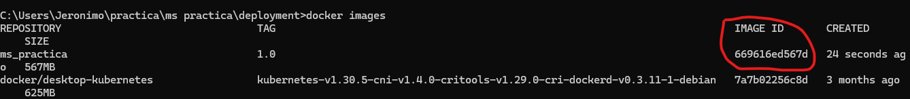
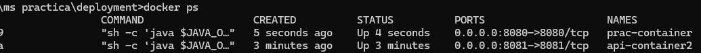
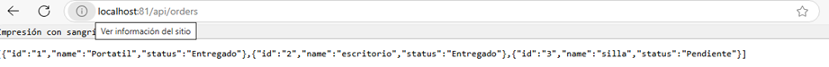
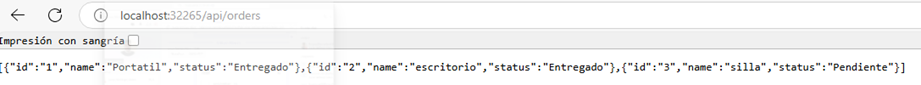
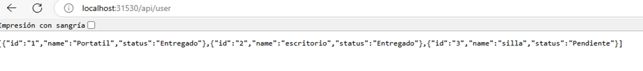
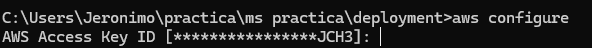

Empezaremos por explicar los diferentes componentes del proyectos y partiremos de los componentes externos, continuando con los componentes core de negocio (dominio) y por último el inicio y configuración de la aplicación.
Lee el artículo Clean Architecture — Aislando los detalles

Es el módulo más interno de la arquitectura, pertenece a la capa del dominio y encapsula la lógica y reglas del negocio mediante modelos y entidades del dominio.
Este módulo gradle perteneciente a la capa del dominio, implementa los casos de uso del sistema, define lógica de aplicación y reacciona a las invocaciones desde el módulo de entry points, orquestando los flujos hacia el módulo de entities.
En el apartado de helpers tendremos utilidades generales para los Driven Adapters y Entry Points.
Estas utilidades no están arraigadas a objetos concretos, se realiza el uso de generics para modelar comportamientos genéricos de los diferentes objetos de persistencia que puedan existir, este tipo de implementaciones se realizan basadas en el patrón de diseño Unit of Work y Repository
Estas clases no puede existir solas y debe heredarse su compartimiento en los Driven Adapters
Los driven adapter representan implementaciones externas a nuestro sistema, como lo son conexiones a servicios rest, soap, bases de datos, lectura de archivos planos, y en concreto cualquier origen y fuente de datos con la que debamos interactuar.
Los entry points representan los puntos de entrada de la aplicación o el inicio de los flujos de negocio.
Este módulo es el más externo de la arquitectura, es el encargado de ensamblar los distintos módulos, resolver las dependencias y crear los beans de los casos de use (UseCases) de forma automática, inyectando en éstos instancias concretas de las dependencias declaradas. Además inicia la aplicación (es el único módulo del proyecto donde encontraremos la función “public static void main(String[] args)”.
Los beans de los casos de uso se disponibilizan automaticamente gracias a un '@ComponentScan' ubicado en esta capa.
La solución consiste en 2 Microservicios: Microservicio 1 --> consume --> Microservicio2 y este devuelve una lista
la lista se ve de la siguiente forma:
{"id":"1","name":"Portatil","status":"Entregado"},{"id":"2","name":"escritorio","status":"Entregado"},{"id":"3","name":"silla","status":"Pendiente"}
- se creo el archivo build.gradle con la siguiente información:
plugins { id 'co.com.bancolombia.cleanArchitecture' version '3.20.13' }
basados en ese archivo procedemos a crear la aplicación con el comando gradle ca --type=imperative --name=ms_api
-
posterior a esto se crea el primer Microservicio 1 ms api con su respectivo entry point con el comando gradle gep --type=restmvc --name=ms_api
-
también creamos el caso de uso gradle guc --name=user
-
creamos el modelo gradle gm --name=OrdersModel
-
Repetimos los pasos para el microservicio 2 que será el ms practica
-
gradle ca --type=imperative --name=plataforma gradle gep --type=restmvc --name=user
-
también creamos el caso de uso gradle guc --name=consumer
-
creamos el modelo gradle gm --name=Ordersmodel
-
Adicionalmente se crea un driven adapter para el ms practica gradle gda --type=restconsumer --name=consumer
- practica\ms api\applications\app-service\src\main\resources\application.yaml
- practica\ms api\deployment\deployment.yaml
- practica\ms api\deployment\services.yaml
- practica\ms api\deployment\hpa.yaml
- practica\ms api\deployment\Dockerfile
- practica\ms api\domain\model\src\main\java\co\com\bancolombia\model\ordersmodel\gateways\OrdersModelRepository
- practica\ms api\domain\model\src\main\java\co\com\bancolombia\model\OrdersModel
- practica\ms api\domain\usecase\src\main\java\co\com\bancolombia\usecase\orders\OrdersUseCase
- practica\ms api\infrastructure\entry-points\api-rest\src\main\java\co\com\bancolombia\api\ApiRest
- practica\ms practica\applications\app-service\src\main\resources\application.yaml
- practica\ms practica\deployment\deployment.yaml
- practica\ms practica\deployment\services.yaml
- practica\ms practica\deployment\hpa.yaml
- practica\ms practica\deployment\Dockerfile
- practica\ms practica\domain\model\src\main\java\co\com\bancolombia\model\ordersmodel\gateways\OrdersModelRepository
- practica\ms practica\domain\model\src\main\java\co\com\bancolombia\model\Ordersmodel
- practica\ms practica\domain\usecase\src\main\java\co\com\bancolombia\usecase\user\UserUseCase
- practica\ms practica\infrastructure\entry-points\api-rest\src\main\java\co\com\bancolombia\api\ApiRest
- practica\ms practica\infrastructure\driven-adapters\rest-consumer\src\main\java\co\com\bancolombia\consumer\ObjectResponse
- practica\ms practica\infrastructure\driven-adapters\rest-consumer\src\main\java\co\com\bancolombia\consumer\RestConsumer
- gradle
- docker desktop
- awscli
- kubectl
- openjdk-17
- git
- VSCode
- Cuenta AWS
- Verificamos el archivo application.yaml del ms practica y que la metadata adapter:restconsumer:url:, tenga el siguiente valor: "http://localhost:8081/api/orders"
- Nos ubicamos en la ruta de cada microservicio y ejecutamos el siguiente comando: practica\ms api>gradle bootrun practica\ms practica>gradle bootrun
-
Luego abrimos el navegador con la siguiente URL:
http://localhost:8080/api/user
y la salida se muestra a continuación
En esta ocasión se utilizó Docker Desktop
-
Se debe crear la red para docker con el comando: docker network create practica-network
-
Se debe modificar el archivo application.yaml, que se encuentra en la ruta: ms practica\applications\app-service\src\main\resources\ y se debe reemplazar en el valor adapter:restconsumer:url, el "localhost" por el host interno de docker "host.docker.internal"
La url quedaría de la siguiente manera:
"http://host.docker.internal:8081/api/orders"
-
Posicionado sobre la ruta de cada microservicio, se ejecuta el comando: docker clean build se genera el .jar en la ruta de cada microservicio. Ej para el ms api: ms api\applications\app-service\build\libs\ms-api.jar- dicho archivo .jar debe ser copiado en su correspondiente carpeta deployment. Para el ejemplo sería: ms api\deployment\
-
Una vez copiados los archivos .jar en sus correspondientes carpetas, se procede a generar la imagen de docker para cada uno de los microservicios (se debe estar posicionado en la carpeta deployment de cada uno de los servicios ya que allí se encuentra el archivo Dockerfile):
practica\ms api\deployment>docker build -t ms_api:1.0 -f Dockerfile . practica\ms practica\deployment>docker build -t ms_practica:1.0 -f Dockerfile .
-
Luego de crear las imagenes, se verifica con el comando
Docker images
para validar que se hayan creado exitosamente y se toma el valor de IMAGE ID
-
con el valor IMAGE ID de cada una de las imagenes se procede a subir cada uno de los microservicios teniendo en cuenta los puertos
configurados en el archivo xxxx, definiendo el nombre para el contenedor y agregando el nombre de la red de docker creada en el punto 1 con el comando:
practica\ms api>docker run -d -p 8081:8081 --name api-container2 500243ae681b --network practica-network practica\ms practica>docker run -d -p 8080:8080 --name prac-container2 669616ed567d --network practica-network
-
luego con el comando:
docker ps
se verifica que los contenedores estén arriba

-
Finalmente se procede a probar la comunicación entre los microservicios accediendo a la siguiente url:
(http://host.docker.internal:8081/api/orders) Esta url debe ser la que se encuentra configurada en el adapter:restconsumer:url del archivo application.yaml que se encuentra en la ruta: ms practica\applications\app-service\src\main\resources\
probando con docker

- Se debe modificar el archivo application.yaml, que se encuentra en la ruta: ms practica\applications\app-service\src\main\resources\ y se debe reemplazar en el valor adapter:restconsumer:url, el "localhost" por el nombre del servicio del ms-api configurado en su campo metadata:name: en el archivo services.yaml, que se encuentra en la ruta: ms api\deployment\ al igual que los archivos deployment.yaml y hpa.yaml.
La url quedaría de la siguiente manera:
"http://ms-api-service:8081/api/orders"
-
una vez se hayan realizado estos cambios, se procede a crear un nuevo archivo .jar para el ms practica. Posicionados sobre la ruta del microservicio, se ejecuta el comando:
docker clean build
-
una vez generado el archivo .jar, debe ser copiado de la ruta ms practica\applications\app-service\buil\libs\plataforma.jar y reemplazado en su correspondiente carpeta deployment. en este caso sería: ms practica\deployment\
-
Luego se procede a generar una nueva imagen de docker para el ms practica que fue el que sufrió cambios en su archivo application.yaml practica\ms practica\deployment>docker build -t ms_practica:1.0 -f Dockerfile .
-
Luego de crear las imagenes, se verifica con el comando
Docker images
-
Se debe verificar en el archivo deployment.yaml de cada uno de los microservicios, que en su metadata containers:image: tengan el valor correspondiente a su imagen y tag <nombre_imagen>:. Para el ms api sería: "ms_api:1.0". Posteriormente Se aplican los archivos de configuración deployment.yaml, services.yaml en ambos ms
kubectl apply -f deployment.yaml kubectl apply -f services.yaml kubectl apply -f hpa.yaml
- Luego se valida que los pods estén corriendo
kubectl get pods
- una vez los pods se encuentren arriba se procede a probar ambos microservicios
Probando por el puerto del service
Microservicio backend

Microservicio consumidor

-
Como primer paso se debe ingresar a la cuenta de AWS y desplegar la plantilla de cloudformation llamada template-reto.yaml que se encuentra en la raíz de este repositorio.
-
Los archivos services.yaml se deben modificar para que sean tipo LoadBalancer
-
Nos conectamos al cluster de eks por línea de comandos de la siguiente manera:
-
aws configure en este punto debemos ingresas las claves de acceso otorgadas para la cuenta de aws

-
para verificar que estamos conectados a la cuenta ejecutamos lo siguiente:
aws sts get-caller-identity
-
luego ejecutar se debe conectar al cluster de la siguiente manera:
aws eks update-kubeconfig --name MicroservicesCluster --region us-east-1
y verificamos con el comando kubectl get ns
-
-
Una vez en el cluster, debemos ubicarnos en la ruta de cada ms para aplicar su respectivo archivo services.yaml
ms practica\deployment>kubectl apply -f services.yaml ms api\deployment>kubectl apply -f services.yaml
-
verificamos con el comando
-
kubectl get svc
-
Luego se toma el valor del EXTERNAL-IP del service ms-api-service para reemplazarlo en el archivo application.yaml del ms practica.
-
Se debe modificar el archivo application.yaml, que se encuentra en la ruta: ms practica\applications\app-service\src\main\resources\ y se debe reemplazar en el valor adapter:restconsumer:url. el localhost y el puerto, se deben reemplazar por el endpoint del balanceador
-
La url quedaría de la siguiente manera:
url: "http://accf5be83dc924d488ccc98992160c36-757254021.us-east-1.elb.amazonaws.com/api/orders"
- Debemos generar un nuevo archivo .jar para el ms practica. Posicionados sobre la ruta del microservicio, se ejecuta el comando:
docker clean build
- una vez generado el archivo .jar, debe ser copiado de la ruta ms practica\applications\app-service\buil\libs\plataforma.jar y reemplazado en su correspondiente carpeta deployment. en este caso sería: ms practica\deployment\
-
Luego se procede a generar una nueva imagen de docker para el ms practica que fue el que sufrió cambios en su archivo application.yaml practica\ms practica\deployment>docker build -t ms_practica_eks:2.0 -f Dockerfile .
-
Luego de crear las imagenes, se verifica con el comando
Docker images
-
Se deben subir las imagenes al repositorio de ECR desplegado en AWS. Para esto debemos obtener la URI del ECR que creamos a través de la iac. en nuestro caso es: 928975674404.dkr.ecr.us-east-1.amazonaws.com/practice-repo
- Se debe ejecutar el Comando para autenticarse en ecr
aws ecr get-login-password --region us-east-1 | docker login --username AWS --password-stdin 928975674404.dkr.ecr.us-east-1.amazonaws.com
- luego se etiqueta la imagen local
docker tag ms_api:1.0 928975674404.dkr.ecr.us-east-1.amazonaws.com/practice-repo:ms_api docker tag ms_practica_eks:2.0 928975674404.dkr.ecr.us-east-1.amazonaws.com/practice-repo:ms_practica_eks2
- una vez se haya etiquetado la imagen se procede a para subir la imagen al ecr
docker push 928975674404.dkr.ecr.us-east-1.amazonaws.com/practice-repo:ms_api docker push 928975674404.dkr.ecr.us-east-1.amazonaws.com/practice-repo:ms_practica_eks2
-
Posterior a subir las imagenes al ECR se procede a configurar los archivos deployment.yaml de cada ms ya que en la metadata
spec:containers:image: debe modificarse con los valores de la URI de ECR y la etiqueta de la imagen como se encuentra en el ECR de la siguiente maneraimage: 928975674404.dkr.ecr.us-east-1.amazonaws.com/practice-repo:ms_practica_eks
y image: 928975674404.dkr.ecr.us-east-1.amazonaws.com/practice-repo:ms_api
-
Luego aplicamos los deployment.yaml a cada microservicio posicionados en la ruta donde se encuentra cada uno de los archivos:
practica\ms practica\deployment>kubectl apply -f deployment.yaml practica\ms api\deployment>kubectl apply -f deployment.yaml
-
Finalmente procedemos a realizar pruebas tanto en línea de comandos como desde el navegador: